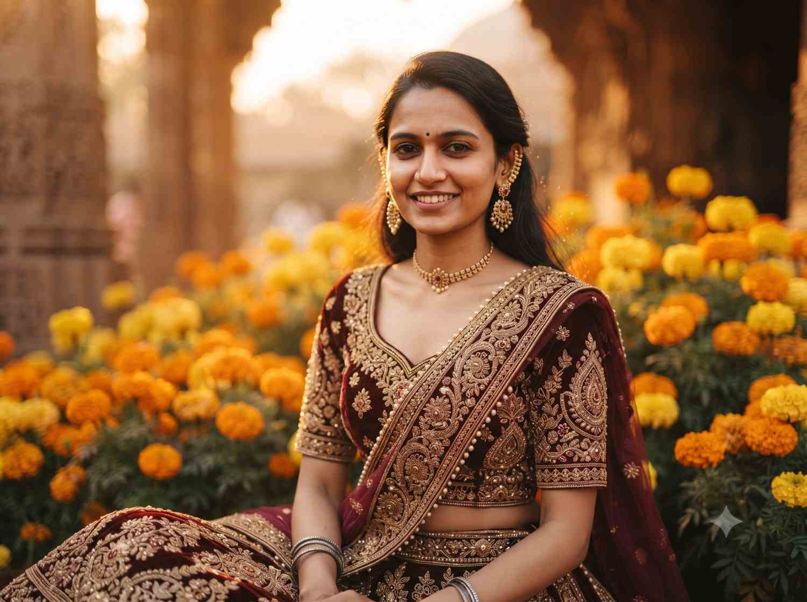

Festival portrait prompt
Festival portrait
Create a celebratory portrait with intricate traditional embroidery, warm light, and the subject's recognizable features.

Copy this prompt
Keep the same face and features from the reference photo. Dress the subject in an intricately embroidered traditional outfit with gold thread detailing. Golden-hour light, shallow depth of field, marigold flowers softly blurred in the background. Warm, cinematic color grade with gentle film grain.
How to use it
- Attach a clear reference portrait.
- Paste the prompt into your image-generation tool.
- Specify a festival, outfit colors, or embroidery motifs to personalize the result.